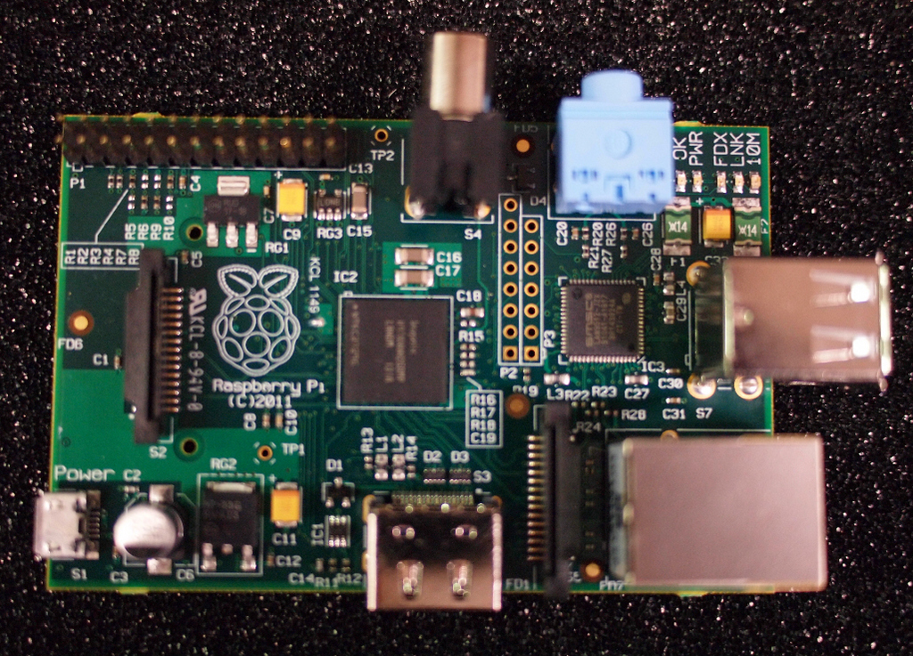
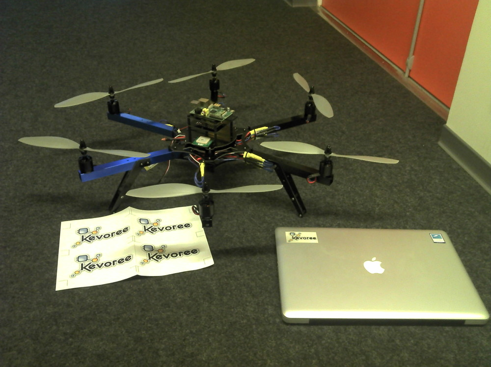

KevScript is a backend to express cloud elasticity
if(detectOverHead()){
this.interpretAndDeploy("script ");
//call local adaptation layer, propagation is done through groups
}
Like any component cloud reasoning engines are able to interact with Model@Runtime layer.
>Elastic Kevoree
A simple multi-axial optimisation
Let define, two toy rules to illustrate elasticity (done with Jorje and Donia)
CPULoad: load balance node to ensure CPU time of customer
Security: ensure that !customer PaaS node don't share an IaaS node
Cost: reduce used IaaS nodes
Let define reactions, move PNode to :
ensure that (father.CPULoad <= SUM(child.CPULoad))
ensure that on same host (child1.OWNER==child2.OWNER)
Rule application are different
It cost far more computational time to optimize the cloud, rather to extend it.
Define two kind of rules and corresponding reasoners:
Reactive ECA like engine to quick reply to load
Long terme Genetic or Gredy engine to perform optimization
Difficulty to combine reasoner
Solution : define reasoner as chained hierarchical
components
Experiment on Kevoree
We define CPU load and OWNER as Kevoree property on Kevoree nodes.
We embedded ECA algorithm as component in a ControlledCloud (Java Process virtualisation).
DDAS are non only composed by Cloud computer frames !
But also with sensors, low consumption computers, smartphones,...
IoT and DDAS(IoS) convergence
Hybrid cloud to extend DataCenter with nodes closest to users et with sensing ability
publickprivate
Hybrid cloud extends elasticity needs !
Composed by cheap low consumption computer

Personal dynamic hosting
Load balance between data-centers frames and home computer
Can SmartGrid can reuse such architecture ?
Next generation SmartGrid requirements !
Next generation SmartGrid must help to build reactive electric consumption to reduce load peaks
Provider will host monitoring components and sensors
User will deploy added value services and connections to home devices
A long term goal : local micro energy generation managment !
Thesis on going on this subject (Triskell+OpenUniversity) (Jacky Bourgeois)
SmartGrid meet *Cloud requirements
Finally SmartGrid devices share *Cloud concepts
Elasticity: to load balance component between remote infrastructure and
customer hosting
Isolation: for isolate critical section and keep open smartMeters for user
space component.
For instance, virtualization between user casual service and electricity provider administration tools
SmartGrid meet *Clouds requirements
SmartGrid must also meets embedded systems requirements
Be able to run on small devices like ARMv6 and ARMv7
Lightweight virtualization (Shared Kernel and Para-Virtualisation)
Can we reuse DDAS platform like Kevoree to build such devices ?
Porting of Kevoree on ARM is on the go to optimize the deployment and runtime
Wide opening : I have a dream...
As cloud cost, envisaged SmartGrid will be highly dynamic
In 4 years, electricity cost (prevision in UK) will change every 15
minutes according to load.
Can we adapt consumption with multi-axials criteria ?
Manage SmartGrid like we optimize *Cloud resources ?
Only one slide to remember
If you got lost R
Kevoree Abstraction model for
distributed adaptive systems Ü
Model@Runtime eases the manipulation of systems P
Ready for cloud and elasticity algorithms development k
We plan to extends elasticity ideas to IoT like SmartGrid U
Open source U
If you don't like cloud we also build drone with Kevoree ;-)

>Thank you
References
Fouquet, Francois and Daubert, Erwan and Plouzeau, Noel and Barais, Olivier and Bourcier, Johann and
Jezequel, Jean-Marc -- Dissemination of reconfiguration policies on mesh networks
F. Fouquet, O. Barais, N. Plouzeau, J-M. Jézéquel, B. Morin and F. Fleurey. -- A Dynamic Component Model for
Cyber Physical Systems. -- In CBSE: 15th International ACM SIGSOFT Symposium on Component Based Software
Engineering. Bertinoro, Italy, June 2012.
E. Daubert, F. Fouquet, O. Barais, G. Nain, G. Sunyé, J-M. Jézéquel, J-L. Pazat and B. Morin. -- A
models@runtime framework for designing and managing Service-Based Applications. -- In ICSE Workshop on
European Sofware Services and Systems Research - Research and Challenges (S-Cube). Zurich, Switzerland, May
2012.
Nain, Grégory , Fouquet, François , Morin, Brice , Barais, Olivier and
Jézéquel, Jean-Marc (2010) Integrating IoT and IoS with a Component-Based approach. In Procedings of
the 36th EUROMICRO Conference on Software Engineering and Advanced Applications (SEAA 2010). Lille,
France.
André, Francoise, Daubert, Erwan , Nain Grégory , Morin, Brice and Barais,
Olivier (2010) F4Plan: An Approach to build Efficient Adaptation Plans. In MobiQuitous.
Brice Morin, Olivier Barais, Grégory Nain, Jean-Marc Jézéquel: Taming
Dynamically Adaptive Systems using models and aspects. ICSE 2009: 122-132
Brice Morin, Olivier Barais, Jean-Marc Jézéquel, Franck Fleurey, Arnor
Solberg:s Models@Run.time to Support Dynamic Adaptation. IEEE Computer 42(10): 44-51 (2009)